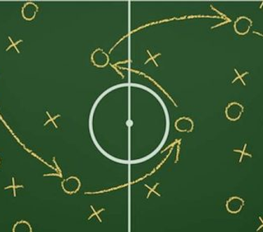
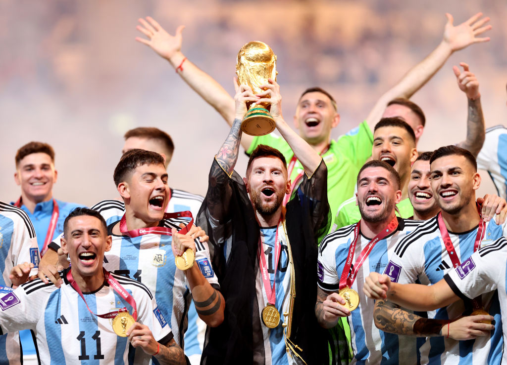
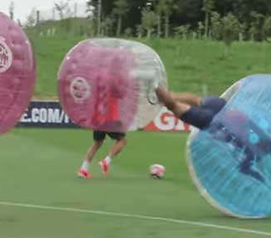

En este sitio web encontraras diversa información sobre el futbol, tenemos para ti !la mejor información al momento!
contamos con entrevistas personales, marcadores , información sobre las mejores ligas del mundo y mucho mas...

|  |  |  |
¡La mejor posición de futbol 11 en la actualidad!
|
Como fue el mundial 2022
|
El fútbol en la pandemia La pandemia del coronavirus ha afectado a todos los sectores, incluso el deportivo Un sector que mueve tanto dinero y tantísimos aficionados en todo el mundo tambien se ha visto afectado por esta emergencia sanitaria que nos mantiene, por el momento, a la población recluida Pero el sector no se ha quedado parado del todo. Los futbolistas, clubes y las federaciones deportivas siguen en activo durante esta cuarentena y son noticia por sus donaciones, por sus retos divertidos y por su solidaridad. En el post de hoy queremos hablar sobre el futbol con coronavirus y en cuarentena |